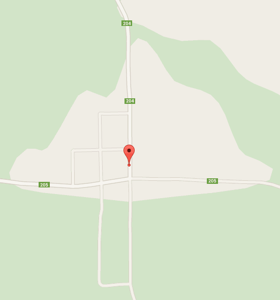

En las sierras de Misiones, en la Región de la Yerba Mate, y pura tierra colorada, zona de profundas tradiciones y cuna de diversas culturas, donde comienza el cordón lateral sureste de las sierras Misioneras, se ubica "La Tai Milagrosa" una casa de campo que se mimetiza con el entorno para ofrecerle al visitante una estadía placentera en pleno contacto con la naturaleza.
"La Tai Milagrosa" es una propiedad de 400 hectáreas que alberga años de tradición familiar.
La vida al aire libre, la excelente gastronomía, la rusticidad y calidez del entorno, sus cabañas y sauna, hacen de este emprendimiento un lugar ideal para el descanso y el relax.
Hay personas que eligen el retiro de la vida urbana, con la necesidad de alejarse de las urgencias cotidianas de las ciudades, para zambullirse en la paz, y en la soledad de “encontrarse con uno mismo”. Es la historia de Carlos Rodríguez, propietario de la casa de campo, quien desde 1988 eligió la paz de los cerros de Misiones para seguir adelante con su proyecto personal.
Poco a poco, y aprovechando las tierras que la familia poseía en Fachinal, comenzó a levantar los cimientos de lo que es hoy la casa de campo.
Rodeado de un lugar con vista panorámica, ondulaciones verdes y mantos pedregosos cubiertos de árboles de Urunday, Carlos confiesa que en este lugar encontró la paz y la tranquilidad. Y se convertirá en el mejor anfitrión para garantizar que tu estada en nuestro espacio sea de pura tranquilidad.
“La Tai Milagrosa” Casa de Campo, es el lugar ideal para descansar, lejos del ruido y del estrés de la ciudad, disfrutando de la paz y el silencio del campo. El establecimiento clasificado en el rubro “turismo rural” rescata como tal el valor de lo auténtico, donde el turista disfruta de la cultura de la región relacionándose con la gente, sus costumbres y adentrándose en conocer los elementos con que estos dan sustento a nuestra cultura. Un espacio que brinda una vista panorámica única de la zona, rica en ondulaciones verdes y mantos pedregosos cubiertos de árboles de Urunday
lataimilagrosa@gmail.com
Ruta 105 Km 30
